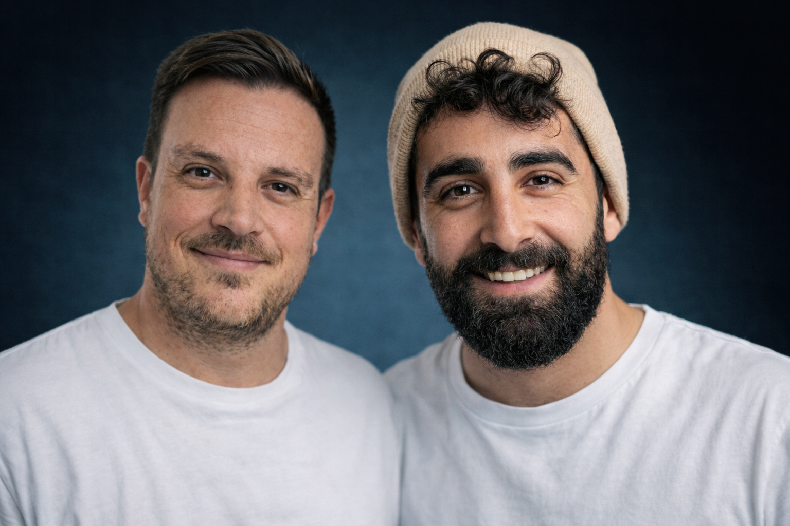

בית המטפלים
קהילה מקצועית שמנגישה ריפוי, ידע והכשרה — לכל מי שרוצה לעזור או להירפא

נעים להכיר!

רם
התחלתי את מסע היזמות שלי ב-2021 עם עסק לירידה במשקל בשם ״תודעה מחטבת״ — עסק שמשלב את עולמות הכושר והתזונה עם עולמות ה-NLP והריפוי הרגשי. משם הייתי מטפל בקליניקה ועזרתי לעשרות אנשים שבאו אליי ל-1 על 1.
לאחר מכן המשכתי ל״מועדון היזמים״ והייתי שם יועץ עסקי, ראש צוות יועצים, מנהל השיווק וסמנכ״ל. בנוסף פתחתי בית ספר ל-NLP עם עומרי כהן ומתן ניסטור שהכשרנו בו 350+ מטפלים.
לימים פתחתי עמותה בשם ״ה-20 החדש״ שמטרתה הייתה להנגיש קורסים וידע בחינם לחבר׳ה בגילאי ה-20, ולאחר חצי שנה אינטנסיבית עם 21 חברי צוות ואופרציה גדולה, הבנתי שזה גדול עליי וסגרתי אותה.
ב-7.10 לחמתי כשריונר למשך חודש וקצת. כשסיימתי את השירות חזרתי הביתה מדוכא ואובדני. תהליכי הריפוי והטיפול שעברתי הצילו לי את החיים, ואני מאמין שכל אדם (ובפרט לוחמים) צריכים לקבל את זה מבלי שזו תהיה פריווילגיה.
בשנה וחצי האחרונות אני במסע חזרה בתשובה אל הבורא הטוב והמיטיב. אני מלמד תורה, יהדות וקבלה ברשתות החברתיות להנאתי, ואני שותף בעסק בשם ״כנות״ עם רועי בן יוסף שקיים כבר 13 שנה ומעביר תהליכי משני חיים לאנשים שרוצים ללמוד איך להרוויח (בכל תחום) ממי שהם בעולם.

הילל אקנין
מעל הכל אני ילד מגודל ואיש משפחה, והתשוקה הגדולה שלי היא לעזור לכמה שיותר אנשי רוח ועומק להגשים את עצמם ולהפוך את הניסיון והייחודיות שלהם לכלים פשוטים, חמים ואנושיים.
אני מאמין שהאנשים החשובים ביותר בחברה הישראלית היום הם המטפלים והמאמנים. אלו שמחזיקים את התקווה והמרפא כשהכול סביב רועש, ומזכירים לנו שגם מתוך הקושי אפשר לצמוח.
נפגשתי עם עולם הטיפול לפני 4 שנים — אבא לתינוקות מבוהל שמפחד איך במציאות הזו אוכל לגדל משפחה בריאה בכל ההיבטים. במקרה לחלוטין נרשמתי לקורס NLP כשלא היה לי מושג מה זה, כי זה היה ממש זול והבטיח לשנות לי את החיים.
כבר בשיעור השני אמרתי למרצה שאני מרגיש שאני זורע עץ סקויה (העץ הגדול בעולם) בתוכי ושזה רק ילך ויתעצם. ובאמת מאז אני לומד כל הזמן ומשכלל את הנכס הכי חשוב שיש לי בחיים — אני והעולם הפנימי שלי.
לאורך השנים האחרונות, בזמן שאני מרגיש שאני גדל ומתפתח, ובעיקר אחרי ה-7 באוקטובר — כשאני מאבד חברים טובים, רואה איך חברים שלי שנתנו הכל עבורנו לא מקבלים מענה מספיק מקצועי והשיח מאוד ציני — הבנתי שאני רוצה לשנות את המצב הזה. וכשרם הציע לי להצטרף לפרויקט המדהים והמחייב הזה, לא יכולתי להישאר אדיש וקפצתי אל המסע הזה ביחד איתו.
מעל עשור שאני חי את עולם העסקים — היה לי עסק של תכשיטי יוקרה ויהלומים, הייתי שותף במועדון שמנגיש את עולם הבינה המלאכותית לעסקים קטנים, והשאיפה שלי היא לקחת את כל העולמות האלה — טכנולוגיה, עסקים והתפתחות אישית — ולשלב אותם למשהו נגיש שמשנה את החברה הישראלית.
היום אני מקדיש את כולי כדי ש״בית המטפלים״ יהיה הכתובת לכל מי שיש לו תשוקה לעזור, להפיץ אור, למקצוע אמיתי שעוזר לאנשים ומפרנס אותם בכבוד.
הסיפור שלנו
בעמוד הזה קצת נסביר יותר עלינו ועל בית המטפלים ולמה קמנו.
בינואר 2026 נסעתי לכנס שיווק עם חברי הטוב צביקה עינב לדובאי. בדרך הלוך במטוס, דיברנו על תרומת מעשר וצביקה שיתף אותי במעשר שהוא נתן כאשר היה ב״אבא חטוב״ לקבוצת הכדורסל שגדל בה ברמת השרון. הוא המליץ לי לתת את המעשר שלי לפרויקטים שמרגשים אותי ושאני חלק מהם, מהסיבה שכאשר אנחנו רק תורמים כסף מבלי להרגיש ולחוות את ההשפעה — זה הופך לאקט טכני ולא לאקט רגשי.
לקחתי את מה שהוא אמר והחלטתי שאני רוצה באמצעות המעשר שלי להקים פרויקט חברתי — ״מטפל לכל אחד״.
פרויקט שהמטרה שלו היא להנגיש לפוסט-טראומתיים, הלומי קרב, נפגעי נובה, לוחמי חרבות ברזל ועוד… סשנים טיפוליים עם מטפלים מוסמכים, מקצועיים ומנוסים כדי לאפשר להם ריפוי במתנה אחרי כל מה שעברו.
לפרויקט נרתם אליי הילל (מייסד ושותף בפרויקט) והתחלנו בבנייה שלו. תוך כדי העשייה, הבנו שיש כאן פוטנציאל למשהו גדול יותר.
לי בעבר היה מכללה ל-NLP שהכשירה במצטבר 350+ מטפלים בשיטת NLP Practitioner וגם NLP Master Practitioner, ובשנתיים האחרונות שמתי ביוטיוב את הקורס NLP שלי בחינם לצפייה ישירה (מה שגרם להמון אנשים להיחשף לתוכן הזה וליהנות ממנו). הילל הציע לי שנעלה רמה וממש נבנה לו פורטל לימודים איכותי בחינם שמונגש לכולם — עם חומרי לימוד, צ׳אטבוטים, סיכומים, מבחנים ועוד!
הבנו שיש לנו כאן משהו טוב בידיים, רק שחסר לנו את החתיכה האחרונה של הפאזל. מה אנחנו עושים עם כל מי שרוצה לקבל תעודת הסמכה רשמית?
ואז עלה הרעיון! נפתח את תוכנית ההכשרה המקצועית והמורחבת ביותר שיש — לאנשים שרוצים ללמוד טיפול, או למטפלים קיימים שרוצים להרחיב את סל הכלים שלהם ולהצטרף לליווי, תמיכה וקהילה תומכת!
וזה בעצם בית המטפלים:
- פורטל לימודים עם מלא תוכן משנה חיים
- תוכנית הכשרה שנתית למטפלים
- מיזם חברתי שמנגיש טיפול בחינם למי שצריך
רוצים להיות חלק מהסיפור?
הצטרפו להכשרה המקצועית שלנו או התחילו ללמוד בחינם — הדלת תמיד פתוחה